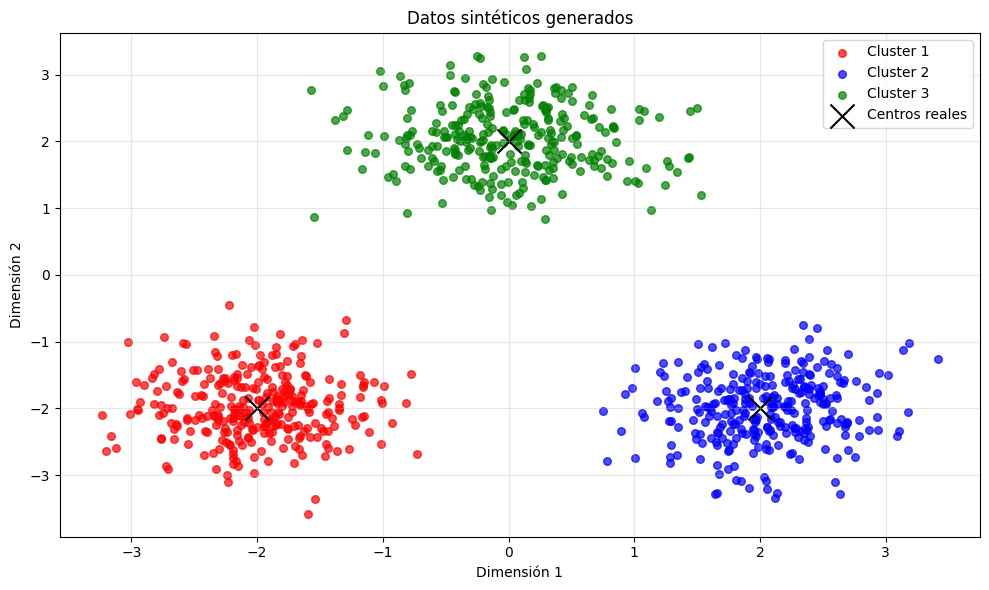
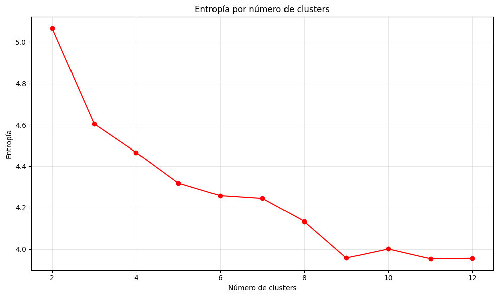

## Learning Gaussian Mixture Models with Entropy-Based Criteria
import numpy as np
import matplotlib.pyplot as plt
def generar_datos_gaussianos(n_muestras=100, n_clusters=3, centros=None):
"""
Genera datos sintéticos siguiendo distribuciones gaussianas de forma simplificada.
Parámetros:
-----------
n_puntos_por_cluster : int
Cantidad de puntos para cada cluster
n_clusters : int
Número de clusters a generar
centros : array o None
Coordenadas de los centros (x,y). Si es None, se generan automáticamente.
Retorna:
--------
X : array
Coordenadas (x,y) de todos los puntos
y : array
Etiqueta del cluster al que pertenece cada punto
"""
# Si no se especifican centros, los generamos aleatoriamente
if centros is None:
centros = np.random.uniform(-5, 5, size=(n_clusters, 2))
# Listas para almacenar los puntos y sus etiquetas
todos_puntos = []
todas_etiquetas = []
# Para cada cluster:
for i in range(n_clusters):
# Obtenemos el centro del cluster actual
centro = centros[i]
# Generamos puntos con distribución normal alrededor del centro
# con una desviación estándar de 0.5
puntos_x = np.random.normal(centro[0], 0.5, n_muestras)
puntos_y = np.random.normal(centro[1], 0.5, n_muestras)
# Combinamos las coordenadas x e y
#puntos_cluster = np.column_stack([puntos_x, puntos_y])
# Usamos np.concatenate en lugar de np.column_stack
puntos_cluster = np.concatenate([puntos_x[:, None], puntos_y[:, None]], axis=1)
etiquetas_cluster = np.full(n_muestras, i)
# En lugar de usar np.full, usamos np.repeat
# Guardamos los puntos y las etiquetas del cluster
todos_puntos.append(puntos_cluster)
todas_etiquetas.append(np.full(n_muestras, i))
# Unimos todos los clusters
X = np.vstack(todos_puntos)
y = np.concatenate(todas_etiquetas)
return X, y
# Visualizar los datos generados
def visualizar_datos(X, y, centros=None):
"""
Visualiza los datos generados coloreados por cluster.
Parámetros:
-----------
X : array, shape (n_samples, 2)
Coordenadas de los puntos.
y : array, shape (n_samples,)
Etiquetas de cluster.
centros : array o None
Coordenadas de los centros reales (opcional).
"""
plt.figure(figsize=(10, 6))
# Asignar un color a cada cluster
# colores = plt.cm.tab10(np.linspace(0, 1, len(np.unique(y))))
# # Graficar cada cluster
# for i, color in enumerate(colores):
# mascara = (y == i)
# plt.scatter(X[mascara, 0], X[mascara, 1],
# color=color, alpha=0.7, s=30, label=f'Cluster {i+1}')
# Elegimos los colores manualmente
colores = ['red', 'blue', 'green', 'orange', 'purple', 'brown', 'pink', 'gray', 'olive', 'cyan']
colores = colores[:len(np.unique(y))]
for i, color in enumerate(colores):
mascara = (y == i)
plt.scatter(X[mascara, 0], X[mascara, 1],
color=color, alpha=0.7, s=30, label=f'Cluster {i+1}')
# Graficar los centros reales si se proporcionan
if centros is not None:
plt.scatter(centros[:, 0], centros[:, 1],
color='black', marker='x', s=300, label='Centros reales')
plt.title('Datos sintéticos generados')
plt.xlabel('Dimensión 1')
plt.ylabel('Dimensión 2')
plt.legend()
plt.grid(alpha=0.3)
plt.tight_layout()
plt.savefig('datos_sinteticos.png', dpi=700)
plt.show()
# Ejemplo de uso
centros = np.array([
[-2, -2], # Centro del cluster 1
[2, -2], # Centro del cluster 2
[0, 2], # Centro del cluster 3
])
X, y = generar_datos_gaussianos(n_muestras=300, n_clusters=3,
centros=centros)
visualizar_datos(X, y, centros)

import numpy as np
import matplotlib.pyplot as plt
from sklearn.datasets import make_moons, make_circles, make_blobs, make_classification
def generar_doble_luna(n_muestras=1000, noise=0.1, random_state=42):
"""
Genera datos sintéticos con forma de doble luna.
Parámetros:
-----------
n_muestras : int
Cantidad total de puntos a generar
noise : float
Nivel de ruido (desviación estándar del ruido gaussiano)
random_state : int
Semilla para reproducibilidad
Retorna:
--------
X : array
Coordenadas (x,y) de todos los puntos
y : array
Etiqueta de la luna a la que pertenece cada punto (0 o 1)
"""
# Utilizamos make_moons de scikit-learn para generar los datos
X, y = make_moons(n_samples=n_muestras, noise=noise, random_state=random_state)
return X, y
# Visualizar los datos generados
def visualizar_datos(X, y):
"""
Visualiza los datos generados con forma de doble luna.
Parámetros:
-----------
X : array, shape (n_samples, 2)
Coordenadas de los puntos.
y : array, shape (n_samples,)
Etiquetas (0 o 1).
"""
plt.figure(figsize=(10, 6))
# Elegimos los colores manualmente
colores = ['blue', 'red']
# Graficamos cada luna
for i, color in enumerate(colores):
mascara = (y == i)
plt.scatter(X[mascara, 0], X[mascara, 1],
color=color, alpha=0.7, s=30, label=f'Luna {i+1}')
plt.title('Datos sintéticos con forma de doble luna')
plt.xlabel('Dimensión 1')
plt.ylabel('Dimensión 2')
plt.legend()
plt.grid(alpha=0.3)
plt.tight_layout()
plt.savefig('doble_luna.png', dpi=700)
plt.show()
# Ejemplo de uso
X, y = generar_doble_luna(n_muestras=1000, noise=0.07)
# Visualizamos los datos
visualizar_datos(X, y)

import numpy as np
import matplotlib.pyplot as plt
class DeterministicAnnealing:
def __init__(self, n_clusters=3, T_min=0.01, T_max=5.0, epsilon=1e-6, max_iter=100):
"""
Implementación del algoritmo Deterministic Annealing para clustering.
Parámetros:
-----------
n_clusters : int
Número de clusters a encontrar
T_min : float
Temperatura mínima para detener el enfriamiento
T_max : float
Temperatura inicial
epsilon : float
Umbral de convergencia para la matriz de pertenencia
max_iter : int
Número máximo de iteraciones
"""
self.n_clusters = n_clusters
self.T_min = T_min
self.T_max = T_max
self.epsilon = epsilon
self.max_iter = max_iter
self.centroids = None
self.M = None # Matriz de pertenencia
def _calcular_distancia(self, X, centroides):
"""
Calcula la matriz de distancias euclidianas al cuadrado entre puntos y centroides.
Utilizamos la identidad: ||a-b||² = ||a||² + ||b||² - 2<a,b>
donde <a,b> es el producto escalar.
"""
# Normas al cuadrado de los puntos: (n_muestras, 1)
normas_X = np.sum(X**2, axis=1, keepdims=True)
# Normas al cuadrado de los centroides: (n_clusters,)
normas_centroides = np.sum(centroides**2, axis=1)
# Producto escalar entre puntos y centroides: (n_muestras, n_clusters)
producto_escalar = np.dot(X, centroides.T)
# Distancia euclidiana al cuadrado
distancias = normas_X + normas_centroides - 2 * producto_escalar
# Evitar errores numéricos
return np.maximum(distancias, 0)
def _actualizar_pertenencia(self, X, centroides, T):
"""
Actualiza la matriz de pertenencia (probabilidades).
Esta es la parte clave del algoritmo deterministic annealing:
la probabilidad de pertenencia depende de la distancia y la temperatura.
"""
D = self._calcular_distancia(X, centroides)
beta = 1.0 / T # Inverso de la temperatura
# Calculamos exp(-beta * D) estabilizando numéricamente
exp_term = np.exp(-beta * (D - np.min(D, axis=1, keepdims=True)))
# Normalización para obtener probabilidades
M = exp_term / np.sum(exp_term, axis=1, keepdims=True)
return M
def _actualizar_centroides(self, X, M):
"""
Actualiza las posiciones de los centroides basado en la matriz de pertenencia.
Cada centroide se actualiza como un promedio ponderado de todos los puntos,
donde los pesos son las probabilidades de pertenencia.
"""
# Suma ponderada de puntos para cada cluster
numerador = np.dot(M.T, X)
# Suma de pesos para cada cluster
denominador = np.sum(M, axis=0)[:, np.newaxis] # Usamos axis=0 para sumar por columnas y np.newaxis para mantener la forma correcta, sino se obtiene un error
# Evitar división por cero (usando operaciones vectorizadas)
centroides = np.zeros_like(numerador)
mascara = denominador > 0
centroides[mascara.flatten()] = (numerador / denominador)[mascara.flatten()]
return centroides
def fit(self, X):
"""
Ajusta el modelo de Deterministic Annealing a los datos.
Proceso:
1. Inicializar centroides y temperatura
2. Bucle principal de annealing:
- Calcular matriz de pertenencia
- Actualizar centroides
- Reducir temperatura
- Verificar convergencia
"""
n_muestras, n_dimensiones = X.shape
# Inicializar centroides aleatoriamente
self.centroids = np.random.randn(self.n_clusters, n_dimensiones)
# Inicializar parámetros para el bucle
t = 0 # Contador de iteraciones
T = self.T_max # Temperatura inicial
convergencia = False
M_anterior = np.ones((n_muestras, self.n_clusters)) / self.n_clusters
# Bucle principal
while not convergencia:
# Actualizar matriz de pertenencia con temperatura actual
self.M = self._actualizar_pertenencia(X, self.centroids, T)
# Actualizar centroides
self.centroids = self._actualizar_centroides(X, self.M)
# Actualizar contador y temperatura
t += 1
T = 1.0 / np.log(1.0 + t) # Programa de enfriamiento
# Verificar convergencia
diferencia = np.sum(np.abs(self.M - M_anterior))
if (T < self.T_min) or (t >= self.max_iter) or (diferencia <= self.epsilon):
convergencia = True
# Guardar matriz actual para próxima iteración
M_anterior = self.M.copy()
return self
def predict(self, X):
"""
Predice el cluster para cada punto en X.
Retorna el índice del cluster con mayor probabilidad para cada punto.
"""
if self.centroids is None:
raise ValueError("El modelo debe ser entrenado antes de predecir")
# Calcular matriz de pertenencia a temperatura mínima (asignación casi dura)
M = self._actualizar_pertenencia(X, self.centroids, self.T_min)
# Asignar cada punto al cluster con mayor probabilidad
return np.argmax(M, axis=1)
def fit_predict(self, X):
"""
Ajusta el modelo y predice los clusters en un solo paso.
"""
self.fit(X)
return np.argmax(self.M, axis=1)
def demo_deterministic_annealing(n_clusters=5):
"""
Demostración completa del algoritmo Deterministic Annealing.
"""
centros = np.array([
[-2, -2], # Centro del cluster 1
[2, -2], # Centro del cluster 2
[0, 2], # Centro del cluster 3
])
X, y = generar_datos_gaussianos(n_muestras=300, n_clusters=3,
centros=centros)
#X, y = generar_doble_luna(n_muestras=1000, noise=0.07)
# 2. Aplicar Deterministic Annealing
print("Aplicando Deterministic Annealing...")
da = DeterministicAnnealing(
n_clusters=n_clusters,
T_min=0.01,
T_max=5.0,
epsilon=1e-4,
max_iter=100
)
y_pred = da.fit_predict(X)
# 3. Visualizar resultados
print("Visualizando resultados del clustering...")
plt.figure(figsize=(12, 8))
# Asignar colores a los clusters
#colores = plt.cm.tab10(np.linspace(0, 1, n_clusters))
colores = ['red', 'blue', 'green', 'orange', 'purple', 'brown', 'pink', 'gray', 'olive', 'cyan']
colores = colores[:len(np.unique(y))+1]
# Graficar puntos por cluster
for i in range(n_clusters):
mascara = (y_pred == i)
plt.scatter(X[mascara, 0], X[mascara, 1],
color=colores[i], alpha=0.7, s=30,
label=f'Cluster {i+1}')
# Graficar centroides encontrados
plt.scatter(da.centroids[:, 0], da.centroids[:, 1],
color='red', marker='o', s=100, label='Centroides')
plt.title(f'Deterministic Annealing Clustering ({n_clusters} clusters)')
plt.xlabel('Dimensión 1')
plt.ylabel('Dimensión 2')
plt.legend(loc='upper right')
plt.grid(alpha=0.3)
plt.tight_layout()
plt.show()
return da
# Ejecutar demostración
modelo = demo_deterministic_annealing(n_clusters=3)
Aplicando Deterministic Annealing...
Visualizando resultados del clustering...

import numpy as np
import matplotlib.pyplot as plt
class DeterministicAnnealing:
def __init__(self, n_clusters=3, T_min=0.01, T_max=5.0, epsilon=1e-6, max_iter=100):
"""
Implementación del algoritmo Deterministic Annealing para clustering.
Parámetros:
-----------
n_clusters : int
Número de clusters a encontrar
T_min : float
Temperatura mínima para detener el enfriamiento
T_max : float
Temperatura inicial
epsilon : float
Umbral de convergencia para la matriz de pertenencia
max_iter : int
Número máximo de iteraciones
"""
self.n_clusters = n_clusters
self.T_min = T_min
self.T_max = T_max
self.epsilon = epsilon
self.max_iter = max_iter
self.centroids = None
self.M = None # Matriz de pertenencia
# Para seguimiento de la evolución de la entropía
self.entropy_per_point_history = []
self.entropy_per_cluster_history = []
def _calcular_distancia(self, X, centroides):
"""
Calcula la matriz de distancias euclidianas al cuadrado entre puntos y centroides.
Utilizamos la identidad: ||a - b||² = ||a||² + ||b||² - 2<a,b>
donde <a,b> es el producto escalar.
"""
# Normas al cuadrado de los puntos: (n_muestras, 1)
normas_X = np.sum(X**2, axis=1, keepdims=True)
# Normas al cuadrado de los centroides: (n_clusters,)
normas_centroides = np.sum(centroides**2, axis=1)
# Producto escalar entre puntos y centroides: (n_muestras, n_clusters)
producto_escalar = np.dot(X, centroides.T)
# Distancia euclidiana al cuadrado
distancias = normas_X + normas_centroides - 2 * producto_escalar
# Evitar errores numéricos
return np.maximum(distancias, 0)
def _actualizar_pertenencia(self, X, centroides, T):
"""
Actualiza la matriz de pertenencia (probabilidades).
Esta es la parte clave del algoritmo deterministic annealing:
la probabilidad de pertenencia depende de la distancia y la temperatura.
"""
D = self._calcular_distancia(X, centroides)
beta = 1.0 / T # Inverso de la temperatura
# Calculamos exp(-beta * D) estabilizando numéricamente
exp_term = np.exp(-beta * (D - np.min(D, axis=1, keepdims=True)))
# Normalización para obtener probabilidades
M = exp_term / np.sum(exp_term, axis=1, keepdims=True)
return M
def _actualizar_centroides(self, X, M):
"""
Actualiza las posiciones de los centroides basado en la matriz de pertenencia.
Cada centroide se actualiza como un promedio ponderado de todos los puntos,
donde los pesos son las probabilidades de pertenencia.
"""
# Suma ponderada de puntos para cada cluster
numerador = np.dot(M.T, X)
# Suma de pesos para cada cluster
denominador = np.sum(M, axis=0)[:, np.newaxis] # Usamos axis=0 para sumar por columnas y np.newaxis para mantener la forma correcta, sino se obtiene un error
# Evitar división por cero (usando operaciones vectorizadas)
centroides = np.zeros_like(numerador)
mascara = denominador > 0
centroides[mascara.flatten()] = (numerador / denominador)[mascara.flatten()]
return centroides
def calcular_entropia_por_punto(self):
"""
Calcula la entropía condicional H(C|X), que es la entropía por punto.
Esta entropía mide la incertidumbre en la asignación de clusters para cada punto.
"""
# Evitar log(0)
M_safe = np.maximum(self.M, 1e-10)
# H(C|X) = -1/m * Σₐ Σᵢ <Mₐᵢ> * log(<Mₐᵢ>)
entropia_puntos = -np.sum(M_safe * np.log(M_safe)) / len(M_safe)
return entropia_puntos
def calcular_entropia_por_cluster(self):
"""
Calcula la entropía condicional H(X|C), que es la entropía por cluster.
Esta entropía mide qué tan uniforme es la distribución de puntos dentro de cada cluster.
También devuelve un array con las entropías individuales de cada cluster.
"""
n_muestras = len(self.M)
entropias_clusters = []
entropia_total = 0
# Para cada cluster i
for i in range(self.n_clusters):
# p(C=i) = 1/m * Σₐ <Mₐᵢ>
p_c = np.sum(self.M[:, i]) / n_muestras # Con self.M[:, i] se obtiene la columna i de la matriz de pertenencia
if p_c > 0:
# p(X=a|C=i) = <Mₐᵢ> / Σₐ <Mₐᵢ>
p_x_dado_c = self.M[:, i] / np.sum(self.M[:, i])
# Evitar log(0)
p_x_dado_c = np.maximum(p_x_dado_c, 1e-10)
# H(X|C=i) = -Σₐ p(X=a|C=i) * log(p(X=a|C=i))
entropia_cluster = -np.sum(p_x_dado_c * np.log(p_x_dado_c))
# Contribución a la entropía total
entropia_total += p_c * entropia_cluster
# Guardar la entropía de este cluster
entropias_clusters.append(entropia_cluster)
else:
# Si el cluster está vacío, su entropía es cero
entropias_clusters.append(0)
return entropia_total, np.array(entropias_clusters)
def fit(self, X):
"""
Ajusta el modelo de Deterministic Annealing a los datos.
Proceso:
1. Inicializar centroides y temperatura
2. Bucle principal de annealing:
- Calcular matriz de pertenencia
- Actualizar centroides
- Reducir temperatura
- Verificar convergencia
"""
n_muestras, n_dimensiones = X.shape
# Inicializar centroides aleatoriamente
self.centroids = np.random.randn(self.n_clusters, n_dimensiones)
# Inicializar parámetros para el bucle
t = 0 # Contador de iteraciones
T = self.T_max # Temperatura inicial
convergencia = False
M_anterior = np.ones((n_muestras, self.n_clusters)) / self.n_clusters
# Para seguimiento de la evolución
self.entropy_per_point_history = []
self.entropy_per_cluster_history = []
# Bucle principal
while not convergencia:
# Actualizar matriz de pertenencia con temperatura actual
self.M = self._actualizar_pertenencia(X, self.centroids, T)
# Actualizar centroides
self.centroids = self._actualizar_centroides(X, self.M)
# Calcular y guardar entropías para seguimiento
entropia_por_punto = self.calcular_entropia_por_punto()
entropia_por_cluster, entropias_individuales = self.calcular_entropia_por_cluster()
self.entropy_per_point_history.append(entropia_por_punto)
self.entropy_per_cluster_history.append((entropia_por_cluster, entropias_individuales))
# Actualizar contador y temperatura
t += 1
T = 1.0 / np.log(1.0 + t) # Programa de enfriamiento
# Verificar convergencia
diferencia = np.sum(np.abs(self.M - M_anterior))
if (T < self.T_min) or (t >= self.max_iter) or (diferencia <= self.epsilon):
convergencia = True
# Guardar matriz actual para próxima iteración
M_anterior = self.M.copy()
return self
def predict(self, X):
"""
Predice el cluster para cada punto en X.
Retorna el índice del cluster con mayor probabilidad para cada punto.
"""
if self.centroids is None:
raise ValueError("El modelo debe ser entrenado antes de predecir")
# Calcular matriz de pertenencia a temperatura mínima (asignación casi dura)
M = self._actualizar_pertenencia(X, self.centroids, self.T_min)
# Asignar cada punto al cluster con mayor probabilidad
return np.argmax(M, axis=1)
def fit_predict(self, X):
"""
Ajusta el modelo y predice los clusters en un solo paso.
"""
self.fit(X)
return np.argmax(self.M, axis=1)
def demo_deterministic_annealing(n_clusters=5):
"""
Demostración completa del algoritmo Deterministic Annealing.
"""
centros = np.array([
[-2, -2], # Centro del cluster 1
[2, -2], # Centro del cluster 2
[0, 2], # Centro del cluster 3
])
X, y = generar_datos_gaussianos(n_muestras=300, n_clusters=3,
centros=centros)
#X, y = generar_doble_luna(n_muestras=1000, noise=0.07)
# 2. Aplicar Deterministic Annealing
print("Aplicando Deterministic Annealing...")
da = DeterministicAnnealing(
n_clusters=n_clusters,
T_min=0.01,
T_max=5.0,
epsilon=1e-4,
max_iter=100
)
y_pred = da.fit_predict(X)
# 3. Visualizar resultados
print("Visualizando resultados del clustering...")
plt.figure(figsize=(12, 8))
# Asignar colores a los clusters
#colores = plt.cm.tab10(np.linspace(0, 1, n_clusters))
colores = ['red', 'blue', 'green', 'orange', 'purple', 'brown', 'pink', 'gray', 'olive', 'cyan']
colores = colores[:len(np.unique(y))+1]
# Graficar puntos por cluster
for i in range(n_clusters):
mascara = (y_pred == i)
plt.scatter(X[mascara, 0], X[mascara, 1],
color=colores[i], alpha=0.7, s=30,
label=f'Cluster {i+1}')
# Graficar centroides encontrados
plt.scatter(da.centroids[:, 0], da.centroids[:, 1],
color='red', marker='o', s=100, label='Centroides')
plt.title(f'Deterministic Annealing Clustering ({n_clusters} clusters)')
plt.xlabel('Dimensión 1')
plt.ylabel('Dimensión 2')
plt.legend(loc='upper right')
plt.grid(alpha=0.3)
plt.tight_layout()
plt.show()
return da
# Ejecutar demostración
modelo = demo_deterministic_annealing(n_clusters=3)
Aplicando Deterministic Annealing...
Visualizando resultados del clustering...

import numpy as np
import matplotlib.pyplot as plt
from matplotlib.cm import get_cmap
def generar_datos_gaussianos(n_muestras=300, n_clusters=3, centros=None, std=0.25):
"""
Genera datos gaussianos para testing con clusters.
Parámetros:
-----------
n_muestras : int
Número total de muestras a generar
n_clusters : int
Número de clusters
centros : array, opcional
Array de forma (n_clusters, n_dimensiones) con los centros de los clusters
std : float
Desviación estándar de los datos generados
"""
# Si no se proporcionan centros, generarlos aleatoriamente
if centros is None:
centros = np.random.rand(n_clusters, 2) * 10 - 5
# Muestras por cluster
n_por_cluster = n_muestras // n_clusters
# Generar datos
X = []
y = []
for i, centro in enumerate(centros):
X_cluster = np.random.normal(loc=centro, scale=std, size=(n_por_cluster, 2))
X.append(X_cluster)
y.append(np.full(n_por_cluster, i))
# Concatenar y mezclar
X = np.vstack(X)
y = np.concatenate(y)
# Mezclar datos
indices = np.arange(len(X))
np.random.shuffle(indices)
return X[indices], y[indices]
def plot_entropia_por_cluster(modelo):
"""
Grafica la evolución de la entropía por cluster a lo largo de las iteraciones.
"""
num_iteraciones = len(modelo.entropy_per_cluster_history)
num_clusters = modelo.n_clusters
# Obtener entropías por cluster en cada iteración
entropias_por_iteracion = []
for i in range(num_iteraciones):
# Obtener entropías individuales para esta iteración
_, entropias_individuales = modelo.entropy_per_cluster_history[i]
entropias_por_iteracion.append(entropias_individuales)
# Crear matriz de entropías para graficar
entropias_array = np.zeros((num_iteraciones, num_clusters))
for i, entropias in enumerate(entropias_por_iteracion):
# Asegurarse de que hay suficientes entropías (por si algún cluster está vacío)
for j in range(min(num_clusters, len(entropias))):
entropias_array[i, j] = entropias[j]
# Seleccionar algunas iteraciones representativas para mostrar (como en la imagen de ejemplo)
if num_iteraciones > 6:
indices_seleccionados = np.linspace(0, num_iteraciones-1, 6, dtype=int)
else:
indices_seleccionados = np.arange(num_iteraciones)
iteraciones_seleccionadas = [entropias_array[i] for i in indices_seleccionados]
# Crear gráfico de barras apiladas
fig, ax = plt.subplots(figsize=(10, 6))
# Colores para los clusters
colores = plt.cm.tab10(np.linspace(0, 1, num_clusters))
# Posiciones de las barras
posiciones = np.arange(len(indices_seleccionados)) + 1
# Para cada cluster, crear una barra apilada
fondo = np.zeros(len(indices_seleccionados))
for i in range(num_clusters):
valores = [iter_entropias[i] for iter_entropias in iteraciones_seleccionadas]
ax.bar(posiciones, valores, bottom=fondo, color=colores[i], label=f'Cluster{i+1}')
fondo += valores
ax.set_title('Entropy per Cluster')
ax.set_xticks(posiciones)
ax.set_ylabel('Entropy (nats)')
ax.legend()
plt.tight_layout()
return fig
def plot_entropia_por_punto(modelo, X):
"""
Crea un scatter plot donde el tamaño de cada punto depende de su entropía.
"""
# Calcular entropía para cada punto
entropias_puntos = []
for i in range(len(X)):
# Probabilidades de pertenencia para este punto
probs = modelo.M[i]
# Evitar log(0)
probs_safe = np.maximum(probs, 1e-10)
# Entropía para este punto
entropia = -np.sum(probs_safe * np.log(probs_safe))
entropias_puntos.append(entropia)
entropias_puntos = np.array(entropias_puntos)
# Normalizar entropías para tamaños de puntos
# Convertimos las entropías a un rango de tamaños entre 10 y 100
min_entropia = np.min(entropias_puntos)
max_entropia = np.max(entropias_puntos)
tamanios = 10 + 90 * (entropias_puntos - min_entropia) / (max_entropia - min_entropia + 1e-10)
# Predicciones de clusters
y_pred = np.argmax(modelo.M, axis=1)
# Crear gráfico
fig, ax = plt.subplots(figsize=(10, 8))
# Colormap para los clusters
cmap = get_cmap('tab10')
colores = [cmap(i) for i in range(modelo.n_clusters)]
# Graficar puntos coloreados por cluster y tamaño por entropía
for i in range(modelo.n_clusters):
mascara = (y_pred == i)
ax.scatter(X[mascara, 0], X[mascara, 1],
c=[colores[i]], s=tamanios[mascara],
alpha=0.7, label=f'Cluster {i+1}')
# Graficar centroides
ax.scatter(modelo.centroids[:, 0], modelo.centroids[:, 1],
color='red', marker='X', s=200, label='Centroides')
# Añadir una barra de color para la entropía
import matplotlib.cm as cm
import matplotlib.colors as colors
# Crear un gradiente de color para la entropía
norm = colors.Normalize(vmin=min_entropia, vmax=max_entropia)
sm = cm.ScalarMappable(cmap=cm.Blues, norm=norm)
sm.set_array([])
cbar = plt.colorbar(sm, ax=ax)
cbar.set_label('Entropía del punto')
ax.set_title('Clustering con tamaño de puntos proporcional a su entropía')
ax.set_xlabel('Dimensión 1')
ax.set_ylabel('Dimensión 2')
#ax.legend()
ax.grid(alpha=0.3)
plt.tight_layout()
return fig
def demo_deterministic_annealing_con_entropia(n_clusters=3):
"""
Demostración completa del algoritmo Deterministic Annealing con visualización de entropía.
"""
# 1. Generar datos
centros = np.array([
[-2, -2], # Centro del cluster 1
[2, -2], # Centro del cluster 2
[0, 2], # Centro del cluster 3
])
X, y = generar_datos_gaussianos(n_muestras=300, n_clusters=3, centros=centros)
# 2. Aplicar Deterministic Annealing
print("Aplicando Deterministic Annealing...")
da = DeterministicAnnealing(
n_clusters=n_clusters,
T_min=0.01,
T_max=5.0,
epsilon=1e-4,
max_iter=100
)
y_pred = da.fit_predict(X)
# 3. Visualizar resultados básicos
print("Visualizando resultados del clustering...")
plt.figure(figsize=(12, 8))
# Asignar colores a los clusters
colores = ['red', 'blue', 'green', 'orange', 'purple', 'brown', 'pink', 'gray', 'olive', 'cyan', 'magenta', 'yellow', 'black']
colores = colores[:n_clusters]
# Graficar puntos por cluster
for i in range(n_clusters):
mascara = (y_pred == i)
plt.scatter(X[mascara, 0], X[mascara, 1],
color=colores[i], alpha=0.7, s=30,
label=f'Cluster {i+1}')
# Graficar centroides encontrados
plt.scatter(da.centroids[:, 0], da.centroids[:, 1],
color='black', marker='X', s=100, label='Centroides')
plt.title(f'Deterministic Annealing Clustering ({n_clusters} clusters)')
plt.xlabel('Dimensión 1')
plt.ylabel('Dimensión 2')
#plt.legend(loc='upper right')
# No imprimimos la leyenda para evitar superposición con la barra de color
plt.grid(alpha=0.3)
plt.tight_layout()
plt.show()
# 4. Visualizar entropía por cluster
print("Visualizando evolución de entropía por cluster...")
fig_entropia_cluster = plot_entropia_por_cluster(da)
plt.show()
# 5. Visualizar entropía por punto
print("Visualizando entropía por punto...")
fig_entropia_punto = plot_entropia_por_punto(da, X)
plt.show()
return da
# Para usar esta función:
modelo = demo_deterministic_annealing_con_entropia(n_clusters=9)
print("Entropia final por cluster:", modelo.calcular_entropia_por_cluster())
Aplicando Deterministic Annealing...
Visualizando resultados del clustering...

Visualizando evolución de entropía por cluster...

Visualizando entropía por punto...
/var/folders/mz/h7lyhbx179g0m6677zcjjdbc0000gn/T/ipykernel_85858/42879459.py:130: MatplotlibDeprecationWarning: The get_cmap function was deprecated in Matplotlib 3.7 and will be removed in 3.11. Use ``matplotlib.colormaps[name]`` or ``matplotlib.colormaps.get_cmap()`` or ``pyplot.get_cmap()`` instead.
cmap = get_cmap('tab10')
Entropia final por cluster: (4.605170646505084, array([4.60517065, 4.60517065, 4.60517065, 4.60517065, 4.60517065,
4.60517065, 4.60517065, 4.60517065, 4.60517065]))
# 5.067268612873276 -> 2
# 4.605170646055333 -> 3
# 4.467127594210047 -> 4
# 4.318664285336398 -> 5
# 4.257749649090237 -> 6
# 4.244473973709584 -> 7
# 4.1337585003769055 -> 8
# 3.957764401686084 -> 9
# 4.001169648828887 -> 10
# 3.9541275060315906 -> 11
# 3.9565135650894847 -> 12
# Dibujamos una grafica de como varia la entropia en funcion del numero de clusters
plt.figure(figsize=(10, 6))
entropias = [5.067268612873276, 4.605170646055333, 4.467127594210047, 4.318664285336398, 4.257749649090237, 4.244473973709584, 4.1337585003769055, 3.957764401686084, 4.001169648828887, 3.9541275060315906, 3.9565135650894847]
plt.plot(range(2, 13), entropias, marker='o', color='red')
plt.title('Entropía por número de clusters')
plt.xlabel('Número de clusters')
plt.ylabel('Entropía')
plt.grid(alpha=0.3)
plt.tight_layout()
#plt.savefig('entropia_clusters.png', dpi=700)
plt.show()

# 4.488216528415952 -> 4
# 4.359429911899708 -> 5
# 4.199537019067531 -> 6